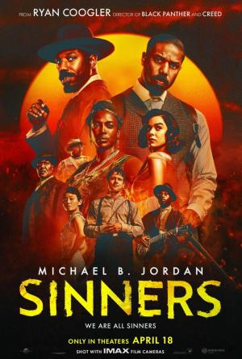
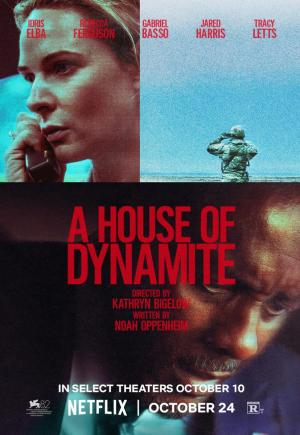
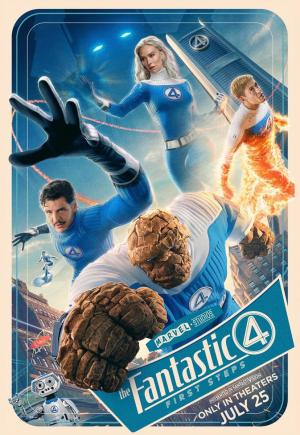
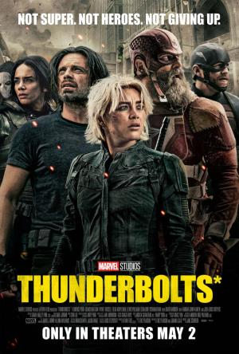

NOTICIAS CINE

|
Titulo: Springsteen. País: Estados Unidos. Dirección: Scott Cooper. Guion: Scott Cooper. Libro: Warren Zanes. |
Adaptación cinematográfica del relato de Warren Zanes sobre la grabación del álbum "Nebraska", de Bruce Springsteen, de 1982. La película sigue a 'The Boss' cuando era un joven músico en los albores de la fama mundial, tratando de reconciliar las presiones del éxito con los fantasmas de su pasado. Grabado en un viejo cassette de cuatro pistas en su habitación en Nueva Jersey, 'Nebraska' refleja un periodo trascendental de su vida y está lleno de personajes perdidos en busca de una razón para creer. |

|
Titulo: Weapons. País: Estados Unidos. Dirección: Zach Cregger. Guion: Zach Cregger. |
Cuando todos los alumnos de una misma clase, salvo uno, desaparecen misteriosamente la misma noche y exactamente a la misma hora, la pequeña ciudad donde viven se pregunta quién o qué está detrás de su desaparición. |
|  |
Titulo: Sinners. País: Estados Unidos. Dirección: Ryan Coogler. Guion: Ryan Coogler. |
Tratando de dejar atrás sus problemáticas vidas, dos hermanos gemelos (Jordan) regresan a su pueblo natal para empezar de nuevo, solo para descubrir que un mal aún mayor les espera para darles la bienvenida. |

|
Titulo: MI5 Sentencia Final. País: Estados Unidos. Dirección: Christopher McQuarrie. Guion: Christopher McQuarrie. |
El agente Ethan Hunt continúa su misión de impedir que Gabriel controle el tecnológicamente omnipotente programa de IA conocido como "la Entidad". |

|
Titulo: Warfare. País: Estados Unidos. Dirección: Alex Garland. Guion: Alex Garland. |
Basada en las experiencias reales del ex marine Ray Mendoza (codirector y coguionista de la película) durante la guerra de Irak. Introduce al espectador en la experiencia de un pelotón de Navy SEALs estadounidenses. Concretamente en una misión de vigilancia que se tuerce en territorio insurgente. Una historia visceral y a pie de campo sobre la guerra moderna y la hermandad, contada como nunca antes: en tiempo real y basada en los recuerdos de quienes la vivieron. |
|  |
Titulo: A House of Dynamite. País: Estados Unidos. Dirección: Kathryn Bigelow. Guion: Noah Oppenheim. |
Cuando un misil de origen no identificado es lanzado contra Estados Unidos, la Casa Blanca comienza una carrera contrarreloj para determinar quién es el responsable y cómo actuar en respuesta. |
|  |
Titulo: The Fantastic Four. País: Estados Unidos. Dirección: Matt Shakman. Guion: Jeff Kaplan. |
Ambientada en el vibrante telón de fondo de un mundo retro-futurista inspirado en los años 60, presenta a la Primera Familia de Marvel mientras se enfrentan a su desafío más terrorífico hasta la fecha. Obligados a equilibrar sus roles como héroes con la fortaleza de su vínculo familiar, deben defender la Tierra de un dios espacial voraz llamado Galactus y su enigmático Heraldo, Silver Surfer. Y si el plan de Galactus de devorar todo el planeta y a todos en él no fuera lo suficientemente malo, de repente se vuelve muy personal. Estreno de "Los 4 Fantásticos" en el MCU. |
|
Titulo: Lost Bus. País: Estados Unidos. Dirección: Paul Greengrass. Guion: Brad Ingelsby. |
En uno de los incendios forestales más mortíferos de la historia de Estados Unidos en la ciudad de Paradise, Kevin McKay, un conductor de autobús escolar, y Mary Ludwig, una maestra infantil, luchan para salvar a 22 niños del aterrador infierno. | |
|  |
Titulo: Thunderbolts País: Estados Unidos. Dirección: Jake Schreier. Guion: Eric Pearson. |
Un grupo de supervillanos poco convencional es reclutado para hacer misiones para el gobierno: Yelena Belova, Bucky Barnes, Red Guardian, Ghost, Taskmaster y John Walker. Después de verse atrapados en una trampa mortal urdida por Valentina Allegra de Fontaine, estos marginados deben embarcarse en una peligrosa misión que les obligará a enfrentarse a los recovecos más oscuros de su pasado. |